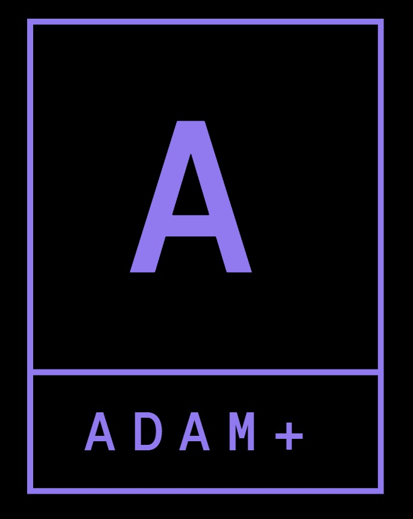

ADAMPLUS+
Curso de SQL Server
Introducción a SQL Server
Instalación de SQL Server
Conexión al Servidor & Autenticación
Creación de una Base de Datos
Creación & Eliminación de una Tabla
Tipos de Datos en SQL Server
Configuración de una Tabla
Registrar Datos en una Tabla
Inserción de Datos
Consultas con Select